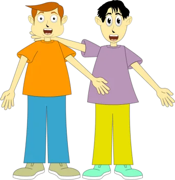
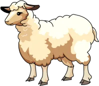
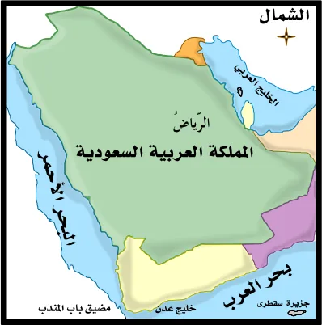
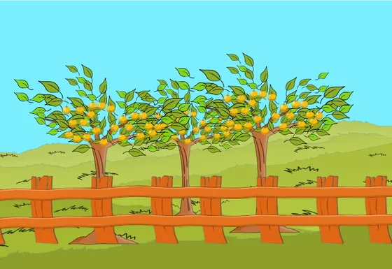
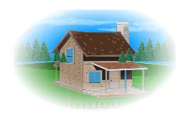
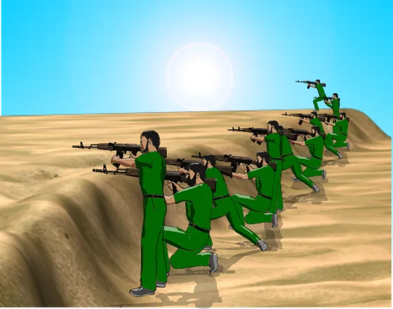
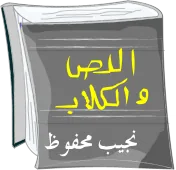
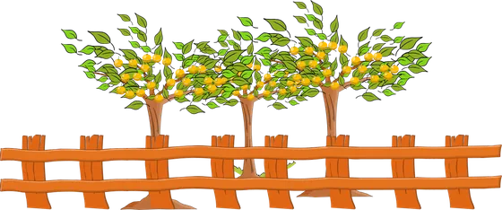
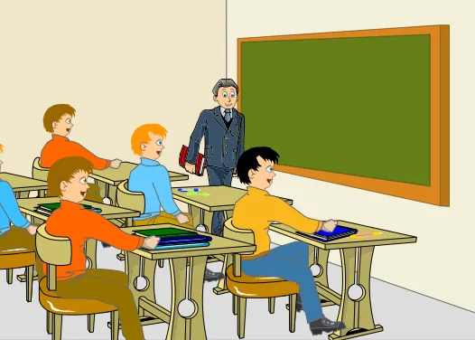

مراجعة: أنواع المعرفة
الدرس 5 من 5 — التراكيب
أُلاحظ
أقرأ الأمثلة وأستمع إليها، وألاحظ الكلمات الملوّنة.
- هُوَ طَالِبٌ مُجْتَهِدٌ.
- أنتَ صديقٌ حميمٌ.
- نَحْنُ الْأَطِبَّاءُ الْمُخْلِصُونَ.
- خالدٌ طالبٌ بارعٌ.
أستنتج
المعرفةاسمٌ يدلّ على شيءٍ معيَّن.
وعكسها النكرة: اسمٌ يدلّ على شيءٍ غيرِ معيَّن، مثل: كتاب، شجرة، ولد.
أنواع المعارف سبعة
- الضمائر ضمائر الغائب (هو، هي، هما، هم، هنّ)، وضمائر المخاطب (أَنْتَ، أَنْتِ، أَنْتُمَا، أَنْتُمْ، أَنْتُنَّ)، وضمائر المتكلّم (أنا، نحن).ضمير الغائبهُوَ طَالِبٌ مُجْتَهِدٌ.

ضمير المخاطبأنتَ صديقٌ حميمٌ.ضمير المتكلّمنَحْنُ الْأَطِبَّاءُ الْمُخْلِصُونَ. - العَلَم اسمٌ سُمّي به إنسانٌ أو حيوانٌ أو مكانٌ أو أيُّ شيءٍ آخر، فأصبح دالّاً عليه.اسم إنسانخالدٌ طالبٌ بارعٌ.

اسم حيوانشَاهَدْتُ النَّعْجَةَ دُولِي.
اسم مكانالرِّيَاضُ عَاصِمَةُ السُّعُودِيَّةِ.اسم ملَكبَلَّغَ جِبْرِيلُ رِسَالَةَ رَبِّهِ. - المعرَّف بـ«أل» اسمٌ كان نكرةً فدخلت عليه «أل» فصار معرفة: شجرة ← الشجرة.

الْأَشْجَارُ مُثْمِرَةٌ. - أسماء الإشارة تدلّ على معيَّن مُشارٍ إليه، وهي: هَذَا، هَذِهِ، هَذَانِ، هَاتَانِ، هَؤُلَاءِ.

هَذَا الْبَيْتُ جَمِيلٌ.هَذِهِ الْفَتَاةُ مُؤَدَّبَةٌ.
هَؤُلَاءِ الْجُنُودُ شُجْعَانٌ. - الأسماء الموصولة تدلّ على شخصٍ معيَّن أو اسمٍ معيَّن، وتليها جملة توضّح معناها. وهي: الَّذِي، الَّتِي، اللَّذَانِ، اللَّتَانِ، الَّذِينَ، اللَّاتِي، مَنْ، مَا.هَذَا هُوَ الرَّجُلُ الَّذِي فَازَ بِالْجَائِزَةِ.الْمُؤْمِنُونَ مَنْ آمَنُوا بِاللَّهِ.

الْقِصَّةُ الَّتِي قَرَأْتُهَا كَتَبَهَا الْكَاتِبُ نَجِيبُ مَحْفُوظٍ. - المعرَّف بالإضافة اسمٌ نكرةٌ أُضيف إلى إحدى المعارف فصار معرفةً بالإضافة.

ثِمَارُ الْحَدِيقَةِ نَاضِجَةٌ. - المعرَّف بالنداء اسمٌ نكرةٌ اكتسب التعريف من خلال قصده في موقف النداء، فصار معرفةً بالنداء.

يَا طُلَّابُ، افْهَمُوا دُرُوسَكُمْ.
أُطبّق
1ما نوع المعرفة في: «نحن نحبّ مدرستَنا»؟
2ما نوع المعرفة في: «زَارَنَا خَالِدٌ أَمْسِ»؟
3ما نوع المعرفة في: «تِلْكَ حَدِيقَةٌ وَاسِعَةٌ»؟
4ما نوع المعرفة في: «نَجَحَ التِّلْمِيذُ الَّذِي اجْتَهَدَ»؟
5ما نوع المعرفة في: «بابُ القسمِ مفتوحٌ»؟
6ما نوع المعرفة في: «يا لاعبُ، مرِّرِ الكرةَ»؟
7أيّ الكلمات التالية نكرة؟
إجابات صحيحة من أول محاولة:
أتمرّن أكثر
أستمع، ثمّ أرتّب الكلمات لأكوّن الجملة:
أستمع، ثمّ أكتب ما أسمع:
أستمع، ثمّ أكتب ما أسمع:
✓ أنهيتَ هذا الدرس
دروس العربية — للاستعمال التعليمي.